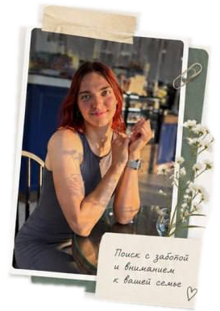
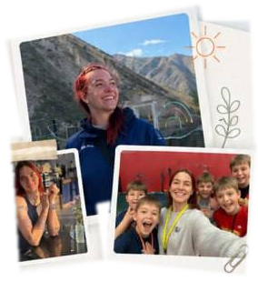

Наталья
мама двоих детей
Настя помогла найти няню для дочки. Очень внимательная, отвечает быстро, понимает, что нужно семье. Няня уже полгода с нами — всё отлично!
Личный подбор, интервью кандидатов
и спокойное сопровождение
на каждом этапе.

мама двоих детей
Настя помогла найти няню для дочки. Очень внимательная, отвечает быстро, понимает, что нужно семье. Няня уже полгода с нами — всё отлично!
мама мальчика, 4 года
Спасибо за подбор чудесной няни!
Настя провела собеседования,
проверила рекомендации и была
рядом до самого выхода на работу.
Очень спокойный и надёжный
человек.
мама девочки, 6 лет
Мы искали няню через агентства, но всё не то. Настя подошла по-человечески и учла все детали, предложила подходящих кандидатов. Рекомендуем!
До рекрутинга 5 лет работала с детьми —
няней, тренером, педагогом.
Изучала детскую психологию и прошла
проф. переподготовку по подбору
домашнего персонала.

Вы оставляете заявку,
в которой рассказываете
о вашей семье
Я собираю портрет идеальной няни,
согласовываю критерии поиска
Подбираю кандидатов
и провожу собеседования
Вы получаете подробные
анкеты и знакомитесь
с подходящими кандидатами
Нахожусь с вами на связи
после выхода няни на работу,
6 месяцев гарантии замены